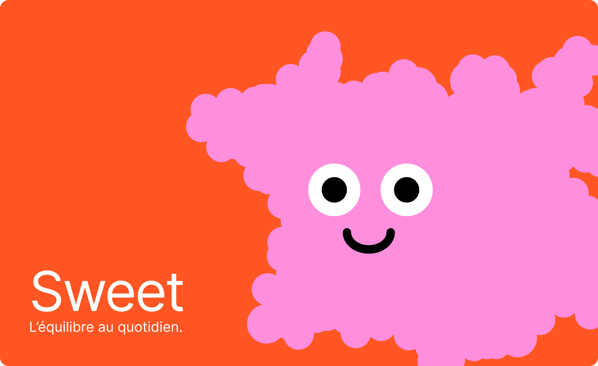
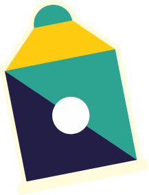
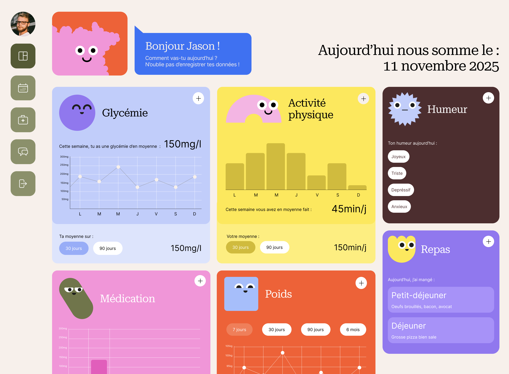
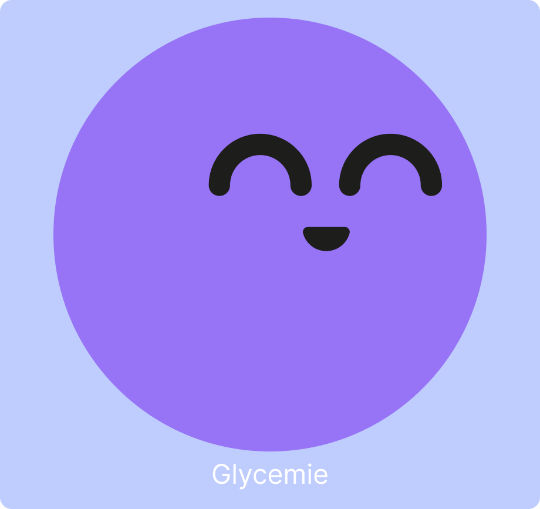
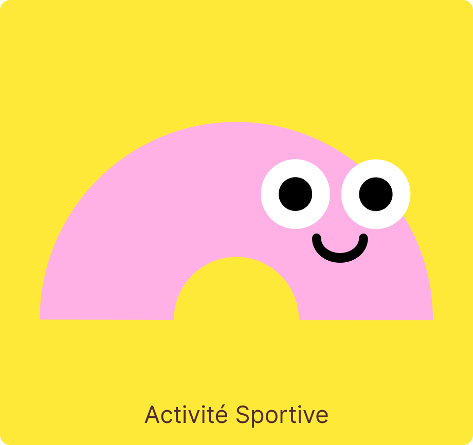
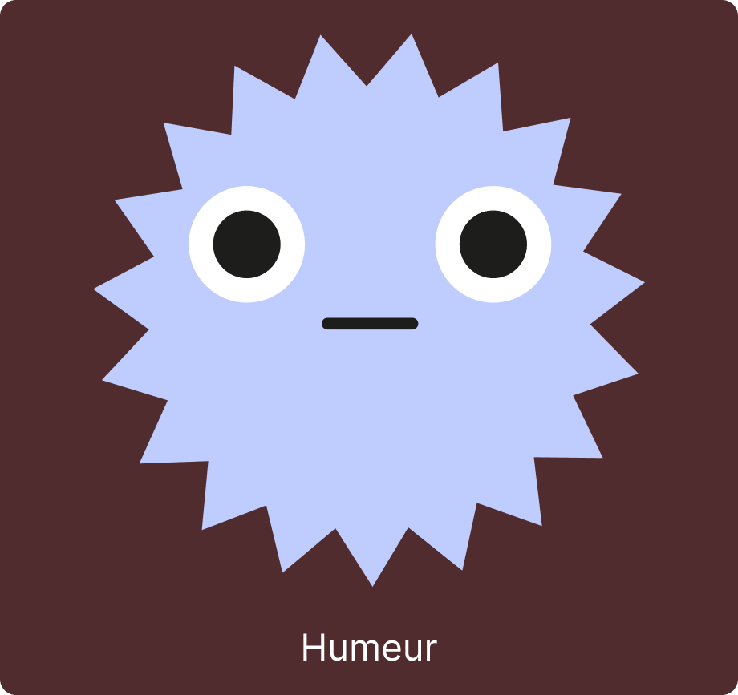
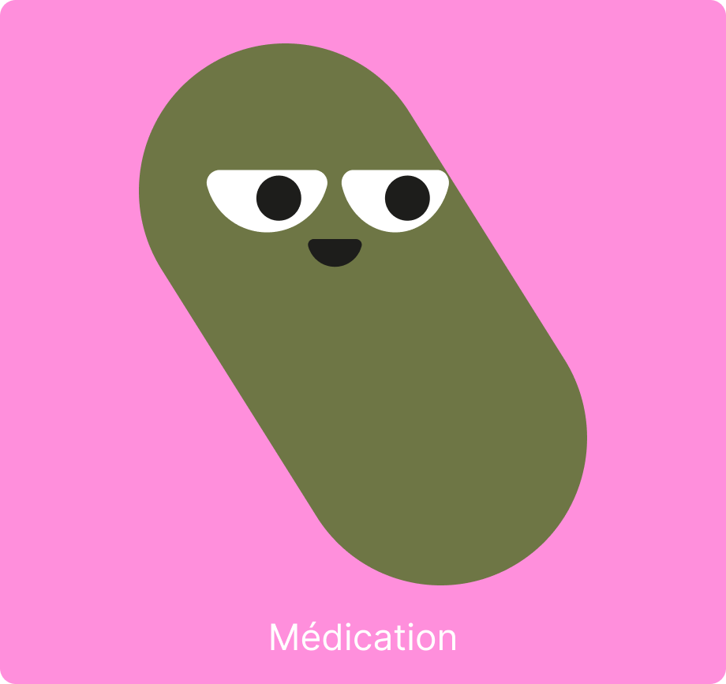
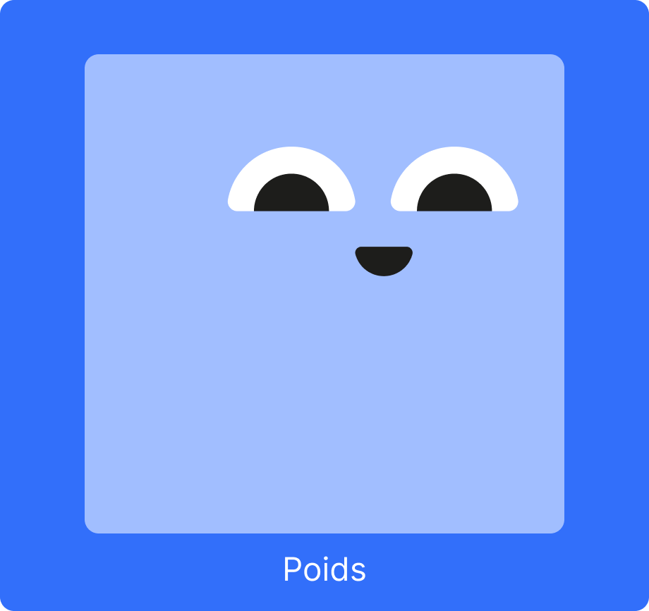
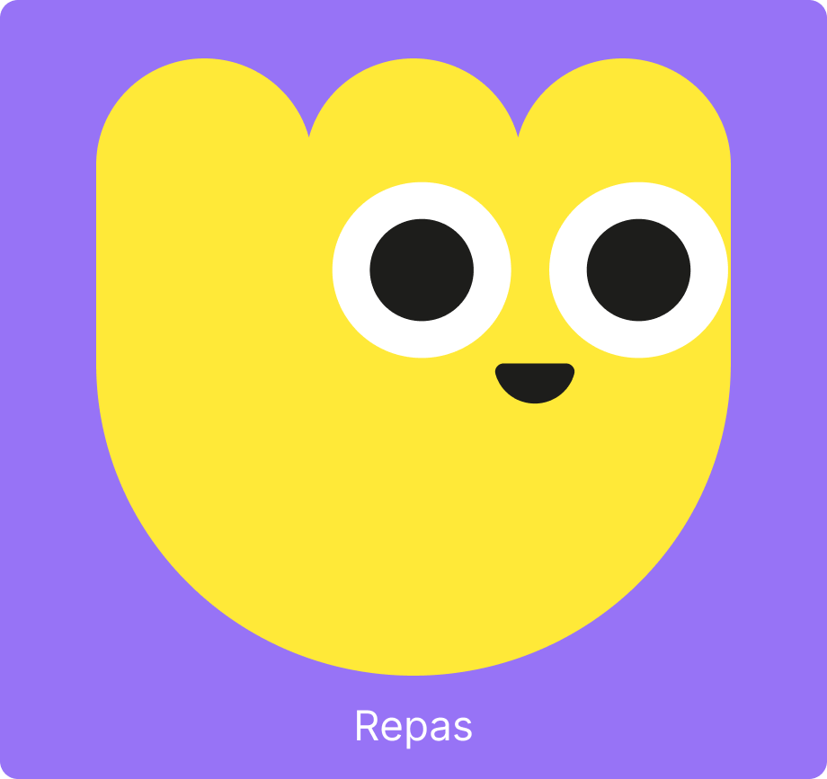

En France, plus de 4 millions de personnes vivent avec le diabète. Sweet est née d'un constat simple : derrière chaque chiffre, il y a une personne qui lutte chaque jour pour garder l'équilibre. Plus qu'un outil de suivi, Sweet redonne du contrôle et de la compréhension à ceux qui vivent avec la maladie, en transformant des données en une vision globale de leur santé :
simple, accessible, humain.

Distinction
Projet primé lors du concours de La Mayenne Innove 2026, catégorie étudiant.
Fonctionnalités

Ton quotidien en un regard : toutes tes données du jour, simplement. Glycémie, Activité physique, Humeur, Repas, Poids, Stock de médicaments
Suivre ton quotidien
Suis tes mesures au quotidien et repère facilement les variations importantes.






Qui sommes-nous ?
Une histoire personnelle devenue projet.
Au sein de notre famille nous avons une prédisposition génétique au diabète de type 2. Aurore (notre directrice commerciale, utilisatrice de référence, et la raison pour laquelle Sweet existe) est diagnostiquée diabétique de type 2 à 27 ans. Elle découvre alors une maladie dont on parle souvent... sans vraiment mesurer ce qu'elle change au quotidien. Elle s'implique sérieusement dans sa santé.
Petit à petit, le diabète ne se contente plus de faire partie du quotidien.
Il finit par organiser le quotidien.
Elle se heurte alors à quelque chose que personne ne lui avait préparé : la fragmentation des outils de suivi. Le classique carnet de report de glycémie, puis un tableur, puis une application connectée à son capteur, une autre pour l'alimentation, une autre encore pour l'activité physique. Et entre tout ça, des notes dans son téléphone avec les conseils de ses professionnels de santé, un matelas d'ordonnances... Elle doit jongler entre ses applications, son carnet, ses notes, pour donner des informations fiables à ses médecins, sans compter... tout le reste.
Une charge mentale épuisante, et difficile à maintenir sur la durée.
Claire (notre développeuse) observe tout ça de très près. Quand vient le moment de choisir un projet de fin d'études, la réponse s'impose d'elle-même. Plutôt que de créer un énième site e-commerce,
Pourquoi ne pas créer l'application qu'Aurore aurait aimé avoir dès le premier jour ?
Cécile (notre directrice artistique) rejoint naturellement l'aventure. Elle donne à Sweet une identité visuelle à la hauteur du projet : simple, intuitive, agréable à utiliser, humaine.
À trois, elles construisent Sweet.
Une solution pensée de l'intérieur.
Aujourd'hui, chaque fonctionnalité de Sweet est pensée à partir de cette expérience. Non pas pour révolutionner le suivi du diabète, mais pour que son organisation ne devienne jamais une contrainte de plus.
Les étapes de Sweet
Projet de fin d'année
En 6 semaines, une première version complète construite de zéro : dashboard, répertoire de soignants, blog.
DemoDay Holberton
Sweet est présenté devant les étudiants, ainsi que Mamadi Dioubaté Ingénieur/Développeur venu spécialement pour l'évènement afin de pouvoir donner un retour technique sur le projet. (Début de la présentation à 29:17)
Voir la vidéo →Blog Holberton School
L'école consacre un article à Sweet parmi les réalisations notables de ses élèves.
Lire l'article →Sweet validé en formation
Projet central de la soutenance RNCP5 DWWM, validé devant un jury de professionnels.
Prix étudiant La Mayenne Innove
Sweet remporte la catégorie étudiante avec 49 % des votes du public.
Sweet dans Ouest-France
Sweet fait l'objet d'un article dans le quotidien régional le plus lu de France.
Lire l'article →Sweet s'améliore
Refonte du code et ajout de deux nouvelles fonctionnalités : calendrier médical et forum.
Et la suite ?
Rencontres avec des professionnels de santé
Avant d'ouvrir Sweet au grand public, des médecins et soignants spécialisés dans le diabète seront consultés. L'objectif : s'assurer que l'application répond aux besoins réels des patients, et qu'elle s'intègre naturellement dans leur parcours de soin.
Tests utilisateurs
Sweet est mis entre les mains de vraies personnes pour des tests en conditions réelles. Leurs retours (ce qui fonctionne, ce qui coince, ce qui manque) guideront les derniers ajustements avant le lancement.
Sweet se structure
Pour que Sweet puisse vraiment exister, il lui faut une maison. Nous créons la structure qui lui permettra de grandir, d'être distribuée, et d'atteindre ceux qui en ont besoin.
Lancement de l'application web
Sweet ouvre ses portes. Les personnes inscrites sur la liste d'attente seront les premières à y avoir accès et à pouvoir tester l'application.
Création de l'application mobile
Sweet prend la forme d'une application mobile pour être toujours à portée de main. Conçue pour Android et iOS, elle accompagnera les patients partout dans leur quotidien.
Lancement sur les stores
Sweet est disponible en téléchargement sur l'App Store et Google Play. L'application rejoint l'écosystème mobile et devient accessible à tous.
On parle
de nous !
Elle crée une application pour aider sa sœur et tous les diabétiques dans la « galère » du quotidien...
SWEET : une application de suivi de santé pensée pour les personnes diabétiques...
Vos données sont en sécurité avec Sweet.
En France, vos informations de santé vous appartiennent.
Nous ne les vendrons jamais, ne les partagerons jamais, et elles resteront protégées par les règles strictes du RGPD.
Sweet veille sur votre confidentialité.
Tu veux participer
à l'aventure Sweet ?
Dis-nous qui tu es et ce dont tu aurais besoin.
Tes réponses nous aident à construire Sweet.
En finalité, notre application sera disponible sur :